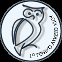
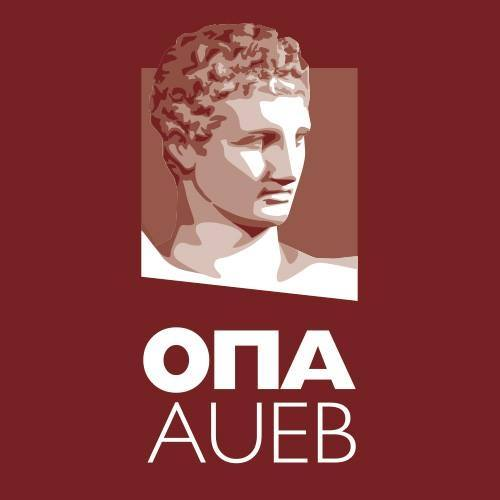

My educational journey
High school
My high school years started at the age of 15 in the 1st Lyceum of Chios, Greece. The study period was from 2014-2017. With the first two years being easy, the third one came along and hit hard. It was the year of Panhellenics, meaning we had to set for special final exams to be able to get into our University of choice. I finished my third and final year top of my class with an avergae of 19.5/20. Afterwards the results of the Panhellenics came out and I had managed to get into The Departmemt of Informatics of Athens University of Economics and Business.
AUEB University
I started my studies at The Departmemt of Informatics during the fall of the year 2017. I'm now at my fourth year of studies. It has been a nice journey filled with knowledge and memories. I've done very well in my programming courses which, was the goal from the start, as well as in my other courses.I've chosen the fields of Data Bases and Security in order to deepen my knowledge and figure out how many systems work.
STOCKHOLM University
Through out my studies in AUEB i decided to apply for the Erasmus exchange program In Stockholm during the winter academic semester, year 2020-201. After being accepted i packed up my stuff and was ready for an exciting and lifetime experience. During the course of 5 months I attended courses including Human Cognition, Information Security, Data Mining and Entrepreneurship. I learned a lot from those course and managed to successfully pass them all.
English diplomas
Learning a foreign language has always been a priority, especially one such as English. Through the course of learning I have also managed to complete the tests presented to me. I've attained the following deplomas:
- Certificate of Competency : University of Michigan
- Certificate of Proficiency : University of Michigan